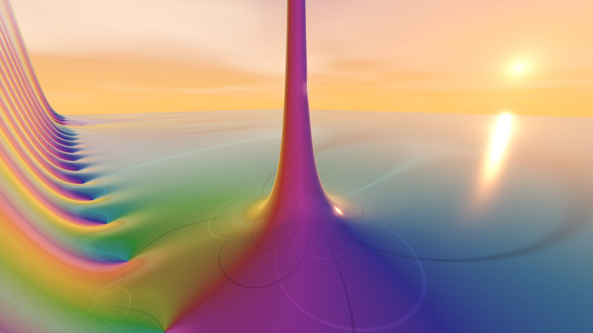
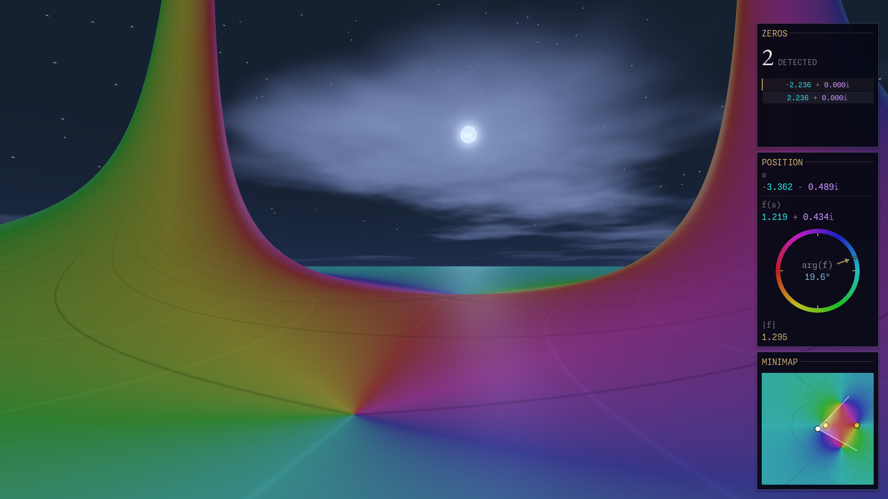
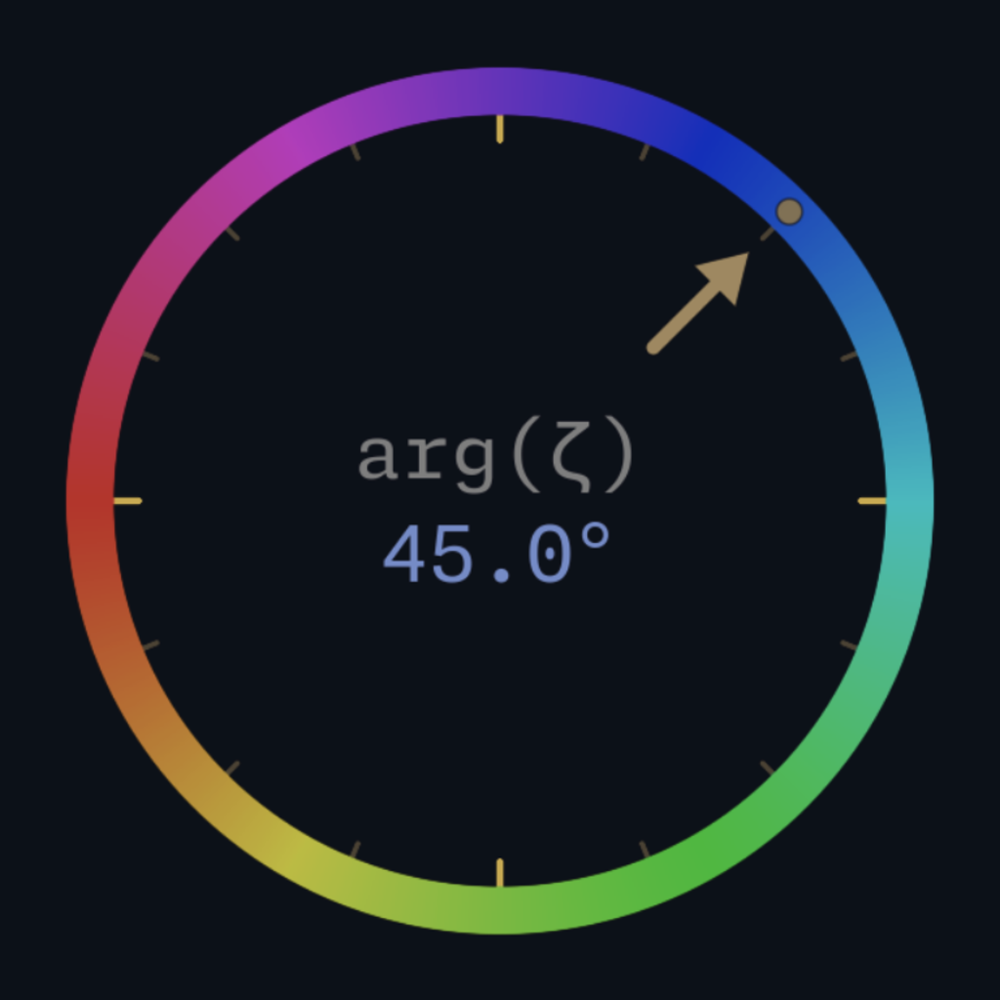
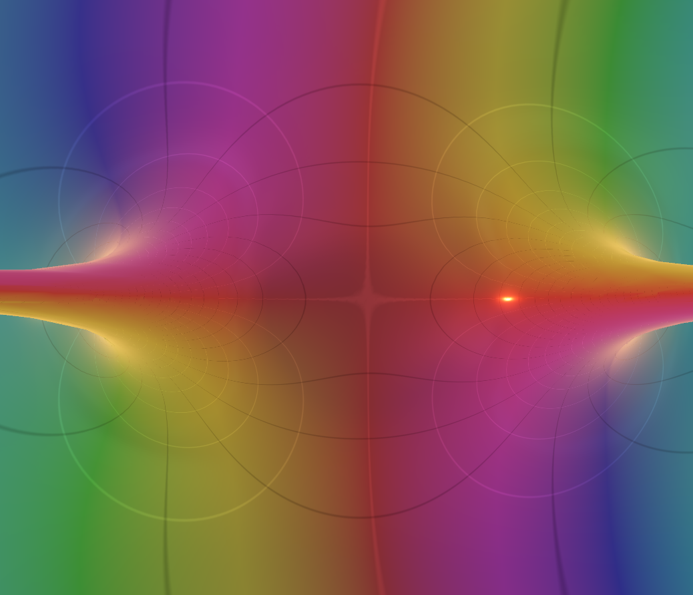

01 / PHASE & MAGNITUDE
Domain colouring in 3D
Terrain elevation maps directly to modulus \( |f(s)| \) while surface hue encodes the argument \( \arg(f(s)) \), augmented by crisp contour isolines.

Navigate analytic landscapes where terrain elevation encodes magnitude and colour reveals phase. Walk the critical strip of the Riemann zeta function, hunt for zeros, and step through branch portals in real time.
Created for students, researchers, and the mathematically curious to experience the geometry hidden inside complex functions first-hand.
Terrain elevation maps directly to modulus \( |f(s)| \) while surface hue encodes the argument \( \arg(f(s)) \), augmented by crisp contour isolines.
No bounding boxes or static meshes. The complex plane unfolds continuously around you as you walk, sprint, or fly across any region.
Trigger automated Newton-step descent to converge directly onto nearby zeros \( f(s)=0 \), or lock onto the critical line \( \operatorname{Re}(s)=\tfrac{1}{2} \).
Explore \( \zeta(s) \), Dirichlet \( \eta(s) \), \( \beta(s) \), and \( \Gamma(s) \) across the entire plane using reflection formulas and Borwein acceleration.
Traverse between sheets of multivalued functions—such as \( \log(z) \), \( z^{1/n} \), and inverse trig functions—by walking through branch-cut portals.
Edit function parameters, zoom factor, series iterations, and lighting time-of-day on the fly and watch the landscape respond immediately.
The in-game HUD tracks every coordinate, function evaluation, and detected root in real time without obscuring the horizon.

Automatically detects and catalogues distinct zeros \( f(s)=0 \) encountered during your walk, displaying their exact real and imaginary coordinates.
Live readout of Re and Im components for both \( s \) and \( f(s) \), paired with an angular \( \arg(f) \) compass and modulus \( |f| \).
Overhead 2D domain-colouring radar showing your camera frustum, contour lines, and discovered roots across the surrounding complex plane.
The explorer supports a rich library of complex functions—including trigonometric, exponential, rational, logarithmic, and fractal families—each evaluated directly in custom GPU shaders and high-precision C++ routines.
Special emphasis is placed on the Riemann zeta function \( \zeta(s) \), combining the Dirichlet eta series, Riemann's functional reflection equation, and Borwein's accelerated algorithm to render the critical strip seamlessly:
Dive into the full mathematical breakdown, Lanczos Gamma coefficients, and shader precision notes in the technical documentation.


Free and open source for Windows and Linux. Built with Godot 4 and C++ GDExtension.